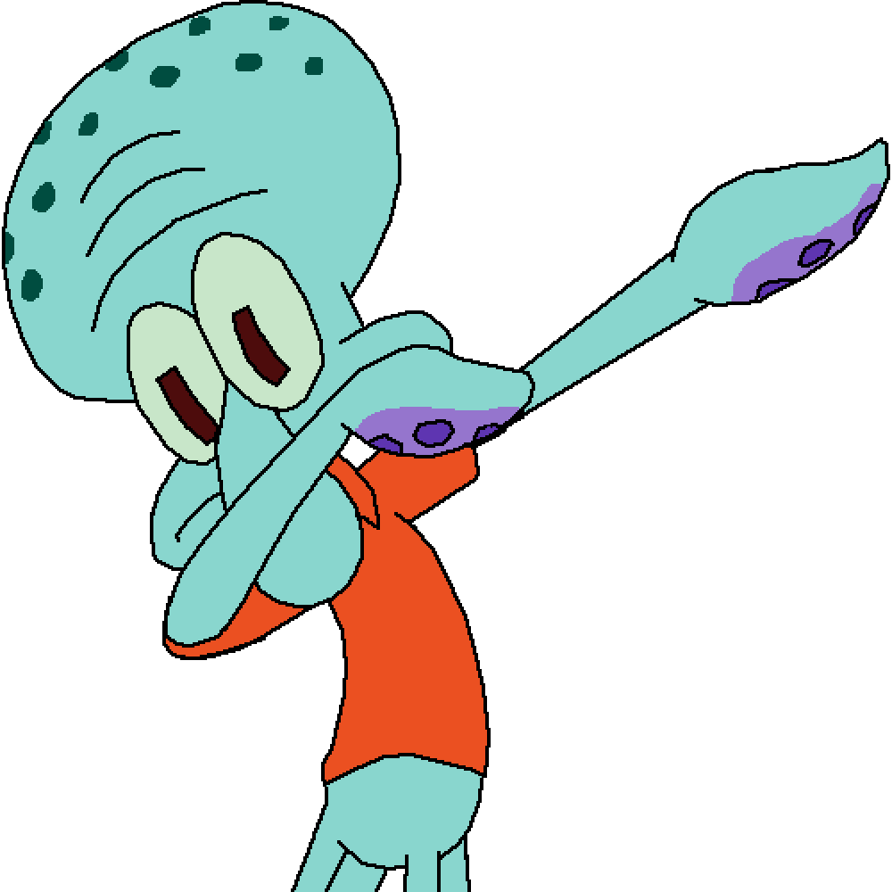

SpongeBob SquarePants
Dive into the colorful world of SpongeBob SquarePants! Explore
Bikini Bottom, meet iconic characters, and relive memorable
moments through playful animations and interactive elements.
Immerse yourself in nostalgia and share your love for the show
with fellow fans
READ MORE

Patrick Star
Dive into the whimsical world of Patrick Star! Meet SpongeBob's
lovable best friend, known for his hilarious antics and infectious
laughter. Explore his quirky quotes, watch him in action through
animations, and discover the joy of Patrick's carefree spirit.
READ MORE

Squidward Tentacles
Discover the world of Squidward Tentacles online! Delve into the
life of the grumpy yet oddly endearing octopus from SpongeBob
SquarePants. Explore his passion for music, his artistic pursuits,
and his often humorous interactions with Bikini Bottom's
residents.
READ MORE